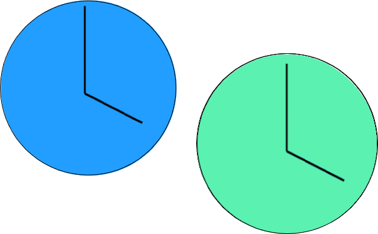
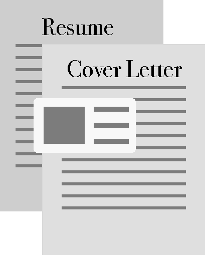
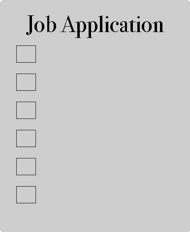
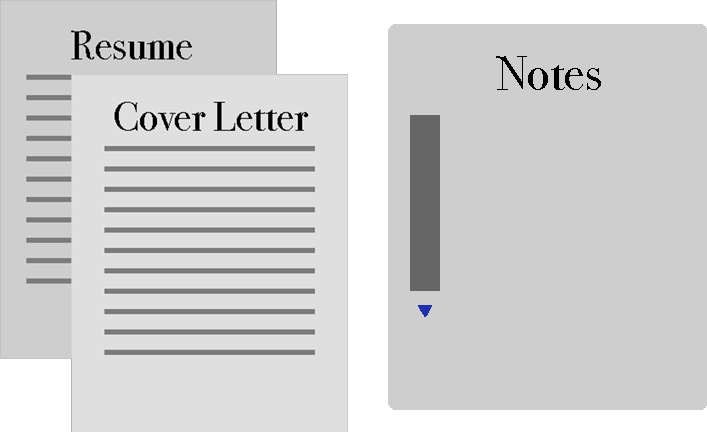

Cover LetterA cover letter is a document that is attached to the front of your résumé with a purpose to supply additional information about your work experience and skills. A cover letter is essentially a sales pitch that promotes your résumé bringing you closer to an interview. It is always a good idea to include a cover letter regardless of whether the employer requires it or not. Therefore, it is imperative that your cover letter makes a good impression on the employer. Start by addressing your letter to a specific person. Research the company to find the right employer, and avoid using a generic placeholder. The contents of your letter should mention the position you are applying for, explain why you deserve an interview, and describe your plans as to how you will follow-up. RésuméYour résumé is a very important part of your job application. Your résumé is a telling of your job experience and history to potential employers. A well written one can easily earn you an interview and place you ahead of candidates while a poorly written résumé can ruin your chances of even earning the interview. The first step on your résumé writing adventure is to choose a résumé format. Each type of résumé comes with its own drawbacks and advantages. You can choose from the following:  Chronological RésuméOverview of StructureA chronological résumé is composed of a list of your work history in which your most recent positions are listed first. Look to the example below for more information on structure. AdvantagesAlthough employers are always in search of innovation and creativity, do not let the fact that the chronological résumé is the most common type of résumé steer you away from using it. Being the most common type of résumé has its merits. One benefit is that employers will be most familiar with this type of format and therefore more likely prefer it over others. In addition to this, a chronological résumé also grants you a chance to advertise your work experience. Finally, a chronological résumé is also the easiest to create due to its straightforward nature. Chronological résumés can help you shine the brightest when you have a vast work history in the same line of work as the job to which you are applying. This can help you start with one foot forward immediately showing your employer that you already have experience in the area of work. DisadvantagesThe chronological résumé can fall short if you wish to change careers. Even if you have extensive work experience, the fact that it is unrelated will likely grant you a one way trip to the reject pile. Lastly, refrain from using a chronological résumé if your work history contains various holes or if you have a history of frequently switching jobs. See Example Functional RésuméOverview of Structure A functional résumé is much more dynamic than a chronological résumé. They typically start with a résumé summary that brings your relevant skills for the job into the limelight. This allows you to create a better image for yourself in the eyes of the employer. They are then organized by themes of either skills or qualifications. These themes are usually headed with keywords from the job description in order to further emphasize skills. Even though the functional résumé tends to draw focus away from job history, it will still likely be a necessary component of your application, and therefore, it is usually placed at the bottom of the résumé. Advantages A functional résumé resolves all of the drawbacks of a chronological résumé. Its main purpose is to draw attention away from your work history and instead focus on your skills and expertise. Because of this, a functional résumé is best suited for job seekers who are changing careers, have gaps in their work history or are new to the workforce. DisadvantagesThe functional and chronological résumés formats are opposites of each other: where one fails, the other is successful. As a result, functional résumés are not suited for individuals who have a vast work history in the same line of work they are applying to, since a functional résumé will only rob them of this advantage. See ExampleCombination RésuméOverview of Structure A combination résumé is a merge between a chronological résumé and a functional résumé. A combination résumé is essentially divided into two parts of equal importance. It begins by first listing job experience and skills and then chronologically listing job history. AdvantagesA combination résumé is perfect for those who want the best of both worlds. A combination résumé allows you to emphasize your skills in the same way a functional résumé does, but it also allows you to display your work history as well. Job seekers with skills, experience, and job history should consider a functional résumé allowing them to present all of their assets at once. DisadvantagesA combination résumé format does not favor those who have weaknesses in their skills or work history. See ExampleTargeted RésuméOverview of StructureA targeted résumé is different from all the résumé formats listed above. It is the résumé format for you if the other three formats do not work for you. A targeted résumé is as the name states targeted. It is a résumé that is adapted to the specific job you wish to apply for in order to highlight whatever you desire, whether it be skills, work history, or anything else. This résumé can take time and effort since there is no specific format that you need to follow. As you make this custom résumé, make sure to proofread carefully in order to avoid errors. General Résumé Writing TipsHere at Garuba we have created a way for you to easily complete your résumé by following the acronym WRP. Write. Review. Proof. WriteOnce you have chosen a résumé format, all that remains is actually writing it. Stick to a résumé format or résumé template while writing unless you wish wish to write a targeted résumé. Make sure to choose your words carefully with professionalism in mind. Along with word choice, you must also make sure that your format, font, and font size are all appropriate as well. Take note of your your style features (italics, underlining, and bold) and keep them to a minimum and reserve boldface for you headers and key achievements which you want to stand out. ReviewThe next step after completing the writing process of your résumé is to review your résumé. In this step, you must make sure that your résumé has all of its required components. If you have confirmed that your résumé contains everything it needs, then move on to the next step, otherwise go back to step one and add there missing parts. ProofNow that your résumé is fully written and lacks no content it is time to make your résumé ready for submission. Proofread your essay checking for errors. These may range from typos to grammar errors. Whatever the error may be, you must make sure that it is corrected before you send your résumé to employers. Use a spell checker as well and consider having your résumé proofread by multiple family members or friends. This will eliminate word flow and logical errors. Amy L. Charnell 336 W. Chugalug Way, Wheaton, MA 60187 c: 444-222-4333 e: alcharnell@gmail.com Experience December 20XX - Present Administrative Coordinator Mannix Services, Naperville, IL - Responsible for analysis of monthly, weekly, and, daily sales reports. Achieved 100% accuracy in sales reports in past two years.
- Responsible for scheduling training classes, seminars, and conferences.
June 20XX - December 20XX Administrative Secretary Minnesota Life Insurance, Barrington, IL - Research and design sales and training presentations, requiring fluency in PowerPoint, SlideShark, and Prezi.
- Responsible for scheduling a three-person sales and training staff.
March 20XX - June 20XX Facilities Assistant SBC Warburg Dillon Reed, Chicago, IL - Responsible for balancing a $7 million dollar facilities budget.
- Responsible for scheduling maintenance calls, staff meetings, office relocations, and construction projects.
May 20XX - May 20XX General Manager KSMR Radio 92.5/94.3FM, Winona, MN - In charge of a 36-member staff, as well as a 7-member management team, with duties that included disciplinary actions, budgeting, special requests, program scheduling, and hiring.
- Balanced a $15,000 budget, as well as chaired a committee to receive a grant for increasing station amenities such as wattage, equipment, space, and music library.
May 20XX - May 20XX Sports Director KSMR Radio 92.5/94.3FM, Winona, MN - Responsible for a 30 member broadcast staff, with standard duties that included scheduling daily on-air sports reports, scheduling all on-air game broadcasts, maintaining all broadcast equipment, training broadcast team, and making travel arrangements for broadcast team.
- Responsible for a weekly sports talk show, with duties that include scheduling guests, doing background research, and running the production board.
Education St. Mary's University of Minnesota, Winona, MN Jose Adelio 1525 Jackson Street, City, NY 11111 Phone: 555-555-5555 Email: jadelo@bac.net Summary Results-oriented, high-energy, hands-on professional with skills in management, quality assurance, program development, training, and customer service. A successful track record in the blood banking care environment. Experience in phlebotomy, blood banking, training, quality assurance, and customer service with a focus on providing recipients with the highest quality blood product, fully compliant with FDA cGMP, Code of Federal Regulations, AABB accreditation, and California state laws. Major strengths include strong leadership; excellent communication skills; competency; strong team player; attention to detail; dutiful respect for compliance in all regulated environments; and supervisory skills including hiring, termination, scheduling, training, payroll, and other administrative tasks. Thorough knowledge of current manufacturing practices and a clear vision to accomplish company goals. PROFESSIONAL ACCOMPLISHMENTS Educational Projects - Facilitated educational projects successfully over the past two years for Northern California blood centers, an FDA-regulated manufacturing environment, as pertaining to cGMP, CFR, CA state and American Association of Blood Bank (AABB) regulations and assure compliance with 22 organization quality systems.
Program Management and Supervision - Successfully supervised contract support for six AT&T Broadband systems located in the Bay Area. Provided customer intervention/resolution and training in telephony and customer care. Managed scheduling, quality control, payroll, and special projects/plant extensions and evaluations to ensure proper end-of-line and demarcation signal.
- Reduced employee turnovers, introduced two-way communication to field employees, enhanced employee appearance and spearheaded the implementation of employee (health) benefits.
Compliance - Provided daily operational review/quality control of education accountability as it relates to imposed government regulatory requirements in a medical environment.
- As program specialist for XXX Missile System, reviewed FAA safety requirements and procedures to ensure compliance for aircraft and passenger safety.
Technology - Chief point of contact for the AT&T telephone and the ABC-affiliated TV stations as related to complaints and diagnosing communication problems either at the site or remote broadcasting. Also tested/repaired prototype equipment for possible consideration or for future use.
- Communication expert and programming specialist for the intermediate range Lance and Persian missile systems. Trained to operate and repair the (FDC) fire direction control computer system and field satellite communications.
Phlebotomy - Assisted team members in veni-punctures, donor reaction care, and providing licensed staffing an extension in their duties by managing the blood services regulations documentation (BSDs) while assigned to the self-contained blood mobile unit (SCU).
WORK HISTORY Project Manager, XXX Blood Center, Fall 20XX – Fall 20XX Program Specialist,XXX Missile Systems, Spring 20XX – Fall 20XX EDUCATION - Associate of Art, Administration of Justice, San Jose University, San Jose, CA
- NCTI Certified, CATV System Technician, Denver, CO
- ABM Certified, Cornerstone Technician, Denver, CO
Jose A. Adelo 1525 Jackson Street, Oakland, CA 94603 555-555-5555 email: abc@abc.com Objective: To obtain a position where I can maximize my multilayer of management skills, quality assurance, program development, training experience, customer service, and a successful track record in the Blood Banking care environment. Summary of Qualifications: Results-oriented, high-energy, hands-on professional, with a successful record of accomplishments in the blood banking, training, and communication transmission industries. Experience in phlebotomy, blood banking industry, training, quality assurance, and customer service with focus on providing the recipient with the highest quality blood product. Fully compliant with FDA cGMP, Code of Federal Regulations, AABB accreditation, and CA state laws. Results-oriented, high-energy, hands-on professional, with a successful record of accomplishments in the blood banking, training, and communication transmission industries. Experience in phlebotomy, blood banking industry, training, quality assurance, and customer service with focus on providing the recipient with the highest quality blood product. Fully compliant with FDA cGMP, Code of Federal Regulations, AABB accreditation, and CA state laws. Professional Accomplishments: - Facilitated educational projects successfully over the past two years for Northern California blood centers, an FDA regulated manufacturing environment, as pertaining to cGMP, CFR's, CA state and American Association of Blood Bank (AABB) regulations, and assure compliance with 22 organization quality systems.
- Provided daily operational review/quality control of education accountability as it relates to imposed government regulatory requirements in a medical environment.
- Assisted other team members in veni-punctures, donor reaction care, and providing licensed staffing an extension in their duties by managing the blood services regulations documentation (BSD's) while assigned to the self-contained blood mobile unit (SCU).
- Successfully supervised contract support for six AT&T Broadband systems located in the Bay Area. Provided customer intervention/resolution, training in telephony and customer care, manpower scheduling, quality control, payroll, and special projects/plant extensions, and evaluations to ensure proper end-of-line and demarcation signal.
- Reduced employee turnovers, introduced two-way communication to field employees, enhanced employee appearance, and spearheaded the implementation of employee (health) benefits.
- Supervised and maintained the position of System Technician in charge of status monitoring and the integration of monitoring devices in nodes and power supplies. For the reception and transmission of telemetry to the network operation centers (NOC's) located in Denver, CO and Fremont, CA. Designed plant extensions, improved the paper flow, and inventory control for the warehouse. Provided preventative maintenance at the system level, face-to-face customer interaction when required, and traveled to several telephony/@home systems in the U.S. for evaluation and suggestions in using the status monitoring equipment.
Work History: - Acting Education Manager, American Red Cross, Oakland, CA: 20XX-present
- Education Coordinator, American Red Cross, Oakland, CA: 20XX-20XX
- Phlebotomist, American Red Cross, Oakland, CA: 20XX-20XX
- Cable Television CATV Supervisor, Core Communication Inc, Sunnyvale, CA: 20XX-20XX
- CATV System Technician, TCI Cablevision Inc, Fremont, CA: 20XX-20XX
- Technician/Day Shift Supervisor, Avantek Inc, Milpitas, CA: 19XX-19XX
Education - Associate of Art, Administration of Justice, San Jose University, San Jose, CA
- NCTI Certified, CATV System Technician, Denver, CO
- ABM Certified, Cornerstone Technician, Denver, CO
Don’t just get a job, get the job you deserve.Continue Your Journey BelowJob OpeningsFinding job openings can be a daunting task, and finding the right job for yourself can be even harder. Follow these simple steps to find the job openings right for you. find job openings  RésuméThis is your chance to capture a potential employer’s interest. Don't get tossed aside; instead, make an impression and acquire that job. Create Your Résumé  ApplicationDon’t get lost in the perpetual process of job applications. Stay on track and apply with ease. Apply Now  The InterviewThis aspect of the job application process either makes or breaks employees. Learn how to make your interview build you up. Prepare For Your Interview ForumYour journey is now complete, but if you still have any lingering questions, continue to the forum for further clarification. Find Answers |